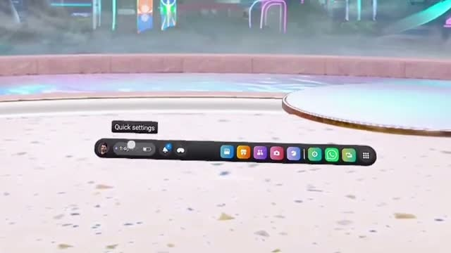
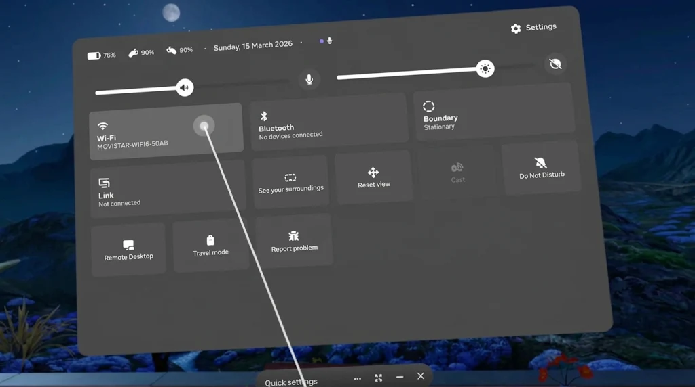
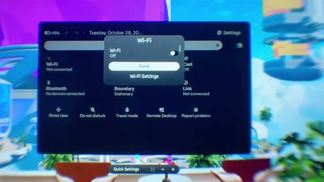
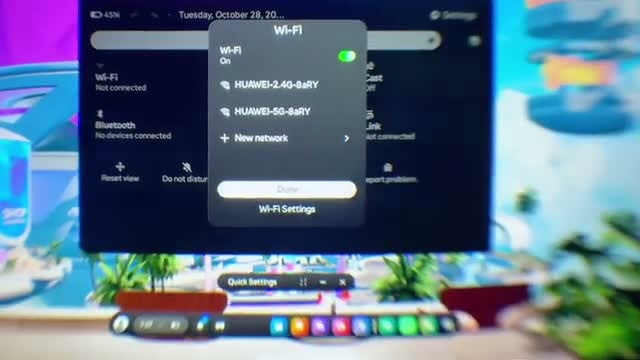
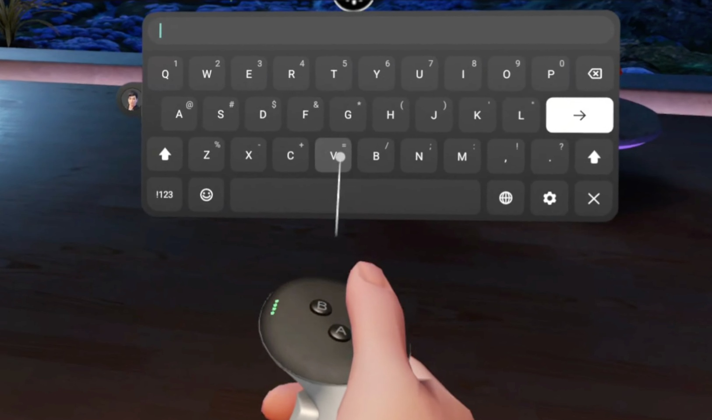
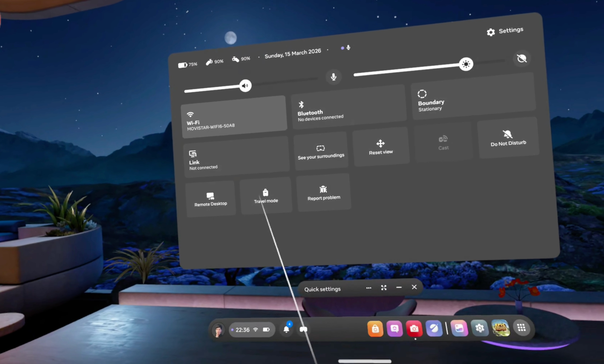

Step 1
Open Quick Settings
From the menu bar, select the time and status area next to your profile icon to open Quick Settings.

Follow these steps on your Meta Quest 3 or Meta Quest 3S. Select a screenshot to view it at full size.
Step 1
From the menu bar, select the time and status area next to your profile icon to open Quick Settings.

Step 2
In Quick Settings, select the Wi-Fi tile to open the network menu.

Step 3
If Wi-Fi is off, select the toggle at the top to turn it on. Wait while the headset searches for available networks.

Step 4
Select the name of the Wi-Fi network you want to join. Use your own network name; the names shown in the video are examples.

Step 5
Use the virtual keyboard to enter your network password. When you are finished, select the right-arrow key to confirm.

Step 6
Select Connect, then wait a few seconds. Check that your chosen network is connected. The screenshot shows Quick Settings after the connection step.

Sequence adapted from the Wi-Fi connection video, with additional screenshots supplied for this guide. Menu appearance may vary with your headset software version.